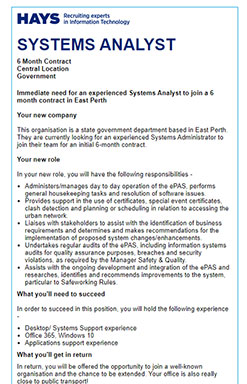

This job is appealing to me because it will require me to use all of my education received during university rather than only part of it. For many jobs one only needs to use part of their education received rather than all of it and this just does not seem to be the case with this job. I currently do not have any of the skills or experience required for this job. I will obtain it by working a lower level job that will provide me the experience with the tools I hope to be working with on a daily basis.
* This is a picture of the Systems Analyst position as referenced above.
The results of my Myers-Briggs test showed that I am an INTP-T or a logician. My learning style test from educationplanner.org revealed that I am 30% auditory, 20% visual, and 50% tactile as a learner. I also took a big 5 personality test and learned of my results for the five major dimensions of personality. Openness (creativity): 92% Conscientiousness (organization): 48% Extraversion (sociability): 44% Agreeableness (get along with others): 58% Natural reactions (emotional stability): 79% The results of my Myers-Briggs test show that I am a logician which means that I am always exploring different ideas and concepts. I always have my mind turning and think deeply about every subject I can. The results of my learning test show that I am a hands on learner meaning that I learn by doing. The results of my personality show that I am very creative, am decently organized, can get along with people, agree with them, and that while I stress about little details when facing intense pressure I can remain calm. This would have an impact on group work as I would be able to get along well with my group as well as provide a high level of creative input. I would also be focused on getting the work done rather than putting it off.
| This table shows my results: | |
|---|---|
| Openness (creativity): | 92% |
| Conscientiousness (organization): | 48% |
| Extraversion (sociability): | 44% |
| Agreeableness (get along with others): | 58% |
| Natural reactions (emotional stability): | 79% |
My project idea is to develop sleek designed wearable security cameras. This is currently on the market however, the ones that are currently on the market are rather bulky and not very discreet. I believe this would be useful in many organizations such as retail so all worker experiences can be recorded to potentially put an end to thefts and workplace harassment. I thought of this after my sister came home from work one day and told me a story of how there was a strange person kind of lurking around her place of employment (a retail clothing and accessory store named Kohls) and was giving her very strange and uncomfortable vibes. It ended up that this person stole two athletic bags full of clothes and escaped through a side door. At first the people believed that my sister was in on the theft because she did not speak up when she saw the person and she defended herself by saying that it is common for the younger female employees to encounter uncomfortable characters in the workplace. This had me wondering why is it so common to be harassed in the workplace rather with looks or verbal comments that an employee would be unable to determine whether a character is suspicious or just a creepy individual. I then realized that a way to stop this would be to have all employees wear a small camera that blends in with their uniforms. The store would most likely have to make it known that it’s employees are wearing a camera and I think that alone would lower the amount of thefts and harassment. Many people believe that if they steal something they will not get caught either by avoiding cameras or not showing face to camera. If every employee is wearing one though, then even an action as simple as a greeter welcoming someone into the store would be recorded and could be used in a case of theft. It would also help to lower harassment rates because if someone is aware that what they are saying and doing is being recorded then they will opt out of the creepy comments and hopefully just act like a regular patron. Many people believe this is just a harmless thing when in actuality it leaves the victim feeling unsafe at work and as if they are not allowed to just do their jobs. No one wants to be scared to go to work about what they might encounter that day. The wearable sleek camera is hopefully the answer to companies profit loss from theft and the answer to maintaining workplace morale and mental health. I would design this by creating a tiny camera that would be able to blend in with a workers lanyard or as part of their nametag. I would also want it to turn on when a person clocks in for their shift and turn off when a person clocks out. I would do this by creating an app to go along with the camera that an individual could also use to clock in and out from. At amazon (my part time job) employees are able to clock in from an app that checks your location to make sure you are in the building, it was designed in order to avoid crowding around the punch in clocks at the facility due to covid 19. After the employees clock in they grab a scanner from a shelf of scanners and use it to scan their ID badge which then links the scanner to that person until they clock out. I feel as though this same concept can be used in places of retail with my camera idea. If the employee clocks in from their phone which ensures they are at the building and are then able to use their phone QR reader from the app to then scan a QR on the back of their camera for that shift. The cameras can be put inside of reusable name tags that when the employee shows up for their shift they can just write their name on it, and when it ends just erase the name and disinfect the tag before leaving it in a charger. In order to create this device I would need to be able to develop and engineer a camera small enough to look discreet within a nametag. I would also need to be able to use a programming language in order to create the app. I would need to be able to program a relationship between the app and the camera to be able to turn the camera on and off. I would also need to be able to program a way to connect the users ID to the existing connection to the camera and the app. To the app can be done through a login and to the camera would be with the QR code scanned from the app. All recorded footage would go through the same process as regular security footage where it would have to be sent to another company and if the store wants to see or review the footage they must send a request for it so that it cannot be tampered with at all. This idea would not only be helpful in retail for stopping external threats to the store but could be useful in any company with customer interactions to ensure that the employees are working diligently and that they are upholding the company's values. If there are any thefts within a company then security footage could be requested on an employee and if there are any complaints from a customer about an employee then it can be viewed exactly as it happened rather than a he said she said by both parties. To include, this idea would save companies money by limiting thefts and would improve workplace morale by lower chances of harassment from customers. It would also allow for customer claims against employees to be reviewed and have action taken against those in question.